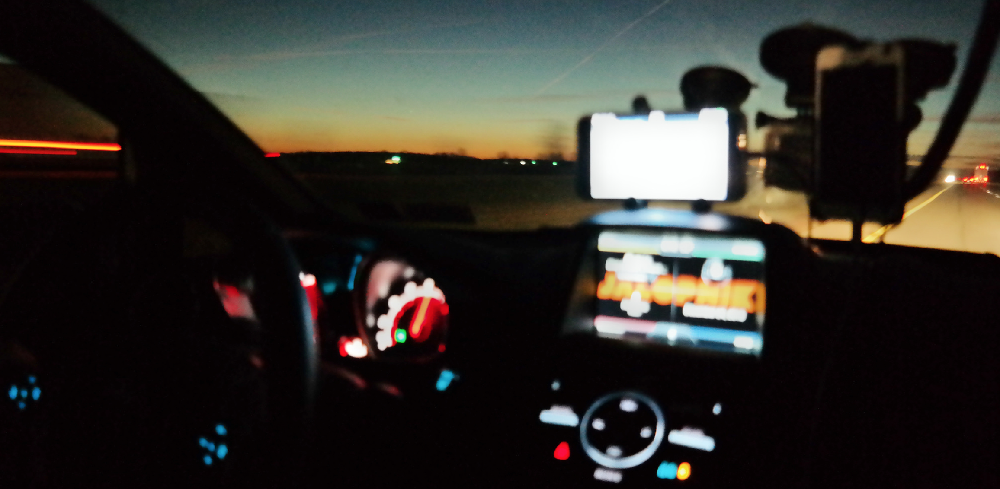
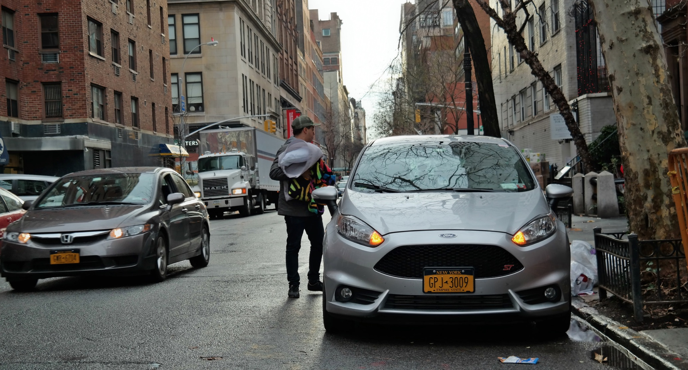
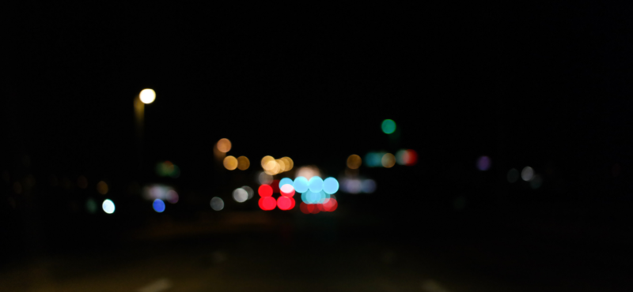
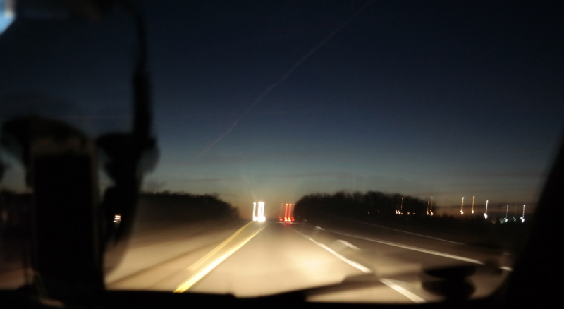
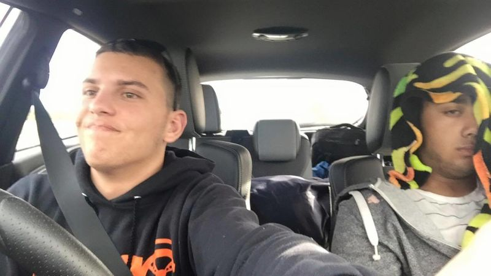
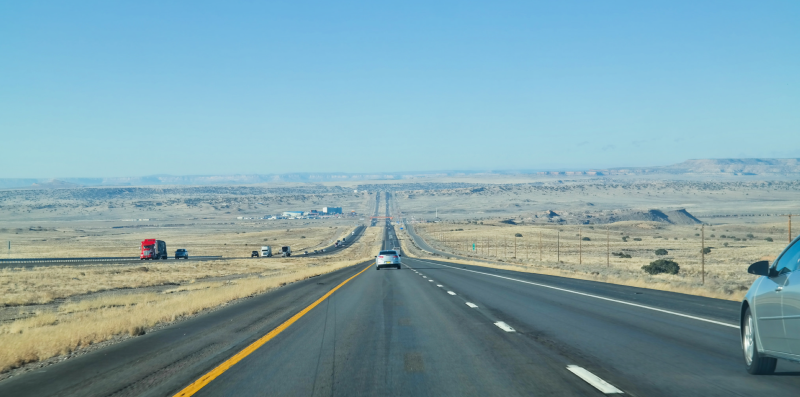
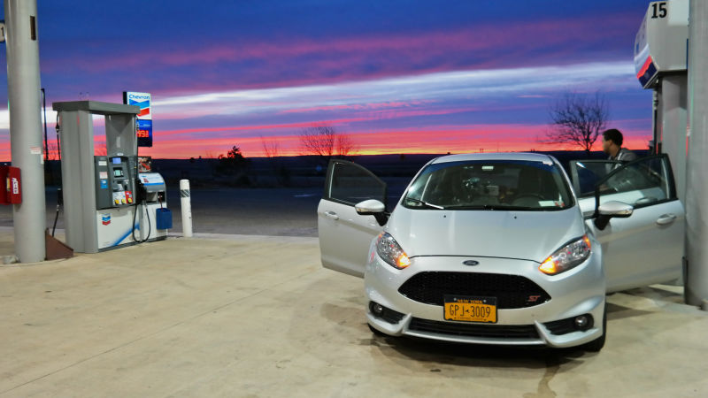

How Not To Drive Cross-Country: I Nearly Died In A Fiesta ST A Bunch Of Times
By Aaron Brown
Published originally on Jalopnik at 1/22/16 12:14
Me and a buddy just spent nearly 40 hours straight driving from New York to California and back to New York on minimal sleep in a Ford Fiesta ST. We knew it wouldn’t be easy, but how not-easy was it? Let’s just say I think I’ve come up with the ultimate guide on what not to do on a long road trip.
The plan Brian Silvestro and I originally concocted was to leave New York City on the morning of Christmas Eve. Our destination was Monterey, CA, home to Mazda Raceway Laguna Seca. Now, you might be wondering, “what kind of event exactly is worth driving over 3,000 miles to spectate or partake in?”
Yep, you guessed it. A track day.
The vehicle of choice for the trip was Brian’s track-proven, ice-proven, rallycross-proven, and autocross-proven FiST. Those are all nice claims for the Fiesta, but to us, we believe there’s not much you can be more proud of than the claim of a cross-country driven car. To us, that shows true endurance, capability, and a willingness to really tough it out—for both the car and its insane pilots.

The car had been places. But not to California and back.
The lightly-researched route of choice would take us on I-78 West and I-70 West through St. Louis, then continuing southwest on I-44 through Oklahoma, I-40 through Northwest Texas, New Mexico, Arizona, and finally into California. We had no points of interests set in mind between New York and Monterey. This southern route was chosen as opposed to a route through Kansas and Colorado in an effort to avoid any potential snow storms. We were running on summer tires and wanted to avoid any potential weather risk, though that didn’t really end up working out.
The Fiesta started the trip with just over 15,550 miles. I don’t want to spoil anything, but we ended the trip with more than 23,000 clocked in.
From New York to Monterey, the drive took us under 38 hours. We may have channeled our inner Alex Roys and Ed Bolians for some good spirit, but we surely weren’t aiming for any records. Our highway speeds may tell a different story, but that’s my story and I’m sticking to it.
Gas stops were frequent, with thanks to the Fiesta’s small 12.4 gallon fuel tank. Food stops were calm and relatively leisurely. And there we almost never hesitated to stop for bathrooms or to stretch our legs. There was no real rush. The goal was to arrive before Sunday, December 27th and we were far ahead of schedule.
More as we have it.
By midnight, or Christmas morning rather, we were deep into Missouri. More than 15 hours into the drive and we had not yet had a driver change. Brian was going strong. Or so he fiercely claimed.
Everything I’ve written so far makes this trip sound fun and adventurous and in the spirit of exploring our country at speed. Now it’s time for the not so fun parts.
There were a lot of those.

It was about 18 hours into the trip and three hours after our midnight dining stop at a Waffle House in Southwestern Missouri that I began feeling nauseous. I don’t know if it was road fatigue, the blueberries in my waffle, the three cups of what was handed to me when I asked for “coffee,” the constant jarring motions from the Fiesta ST’s sporty suspension, or some combination of these things. Something just wasn’t sitting right.
This led to an unavoidable 3 a.m. stop at a Love’s rest stop somewhere off the interstate in Oklahoma. After rushing for the bathroom and conducting business, I raided the rest stop’s poorly-stocked medicine inventory.
Rolaids, over the counter motion sickness medicine, and water soon became very close friends of mine. Well, the water was just a temporary friend. I had never even had motion sickness before. What was happening to my body?
I never found out. But at least it didn’t result in me throwing up.
To get my mind off the sickness and to pack in whatever sleep I could before Brian handed the driver’s seat over to me for the next stint, I threw my rainbow colored blanket over my head and tried to fall back asleep.

The sleeping worked. That is, until I was woken up by a violent left-right motion. A motion caused by Brian swerving off the shoulder and back onto the thankfully-desolate Midwestern interstate after he began to nod off. It was at this time we decided a driver change should take place.
Ever heard the saying a sleep-deprived driver is worse than a drunk driver? After this road trip, I can confidently say that it’s true.
Something that Brian experienced, and something I have been less than happy to have felt before the trip, was the dizziness and hallucinations that come with long stints of night driving. There’s something about those seemingly endless dark black roads, lined with the various yellow and white lines, that can really get to you. Tricks your eyes and your brain.
Suddenly, a shadow projected onto the road looks like an object you have to swerve to avoid. Or your eyes just begin to wander aimlessly and the driving becomes almost thoughtless, and not in a good way. I don’t know.
There’s not enough Red Bull, Coffee, or Five-Hour Energy in the world that could prevent the night’s darkness from playing with our minds, but we didn’t let it stop us.
Sure, we could’ve stopped for a hotel when it got dark and the driving seemed to grow increasingly more rough. In retrospect I wish we had a few times.
When each state seems to go by so quickly, in the moment it just didn’t seem logical or exciting enough to stop and rest. Not when I had been successfully napping through Brian’s stints and we trusted each other to admit when enough was enough.
In the moment, there’s an inner-sensation to just keep pushing for the next border, the next landmark, the next whatever, and before you know it, you’re already there. It might not be the safest way to road trip, but in our young, eager, and continuously-learning minds, it’s hard to grasp that there’s any other way to do it.

Speaking of mindless night thoughts, there’s nothing like recounting your stories after the trip with your buddy and finding out you were awake for things you have no idea happened. That’s fun.
Specifically, Brian was telling a story of how we were passing through a U.S. Border Patrol inspection station in New Mexico. He was flying down the interstate at a speed I’d rather not disclose as he was approaching yellow flashing lights down the road. At first, he brushed it off as just another brief construction zone, until he saw the tractor trailers parked and a permanently-standing structure placed in the middle of the interstate.
Brian’s squeaky, track day-worn race brakes helped slow the Fiesta ST to a more acceptable pace. As we were guided into the inspection station and the car was approached by Border Patrol dogs, Brian remembers me waking up from my deep sleep for nearly a minute, surveying the situation happening around the car, observing the dogs doing their jobs, and then putting my head back down to sleep. We passed through the inspections station with no issues, but I remember absolutely none of it.
I would like to think I would be able to wake up and be at least somewhat-coherent if I was in a vehicle surrounded by federal officers with trained search dogs that are happy ready to maul me and rip me to shreds. Maybe I was just that knocked out from the insane amounts of driving we’d been doing. Maybe it all just seemed so normal that I could literally give zero fucks. Either way, the fact that none of this lives on in my direct memory is nothing less than scary.

For what we needed for the trip, we couldn’t have been happier with how the Fiesta ST performed. Not once did it give us any serious issues. Not counting the violent steering wheel vibration under braking after Brian’s brake-heavy Laguna Seca track day. The only serious equipment-related thing I wish we could’ve done something about was the tires.
As I mentioned earlier, we tried avoid snow by routing around the more-northern, snow-prone states like Colorado. Once we began to get deeper into New Mexico, Brian and I realized this didn’t do us much good.
This wouldn’t have been much of a problem if we didn’t have summer performance tires mounted on each of the Fiesta’s 17-inch wheels.
Toward the end of my first stint behind the wheel, snow began to come down at a decent rate and I was forced to slow to a safer pace for the weather. This wouldn’t have been much of a problem if we didn’t have summer performance tires mounted on each of the Fiesta’s 17-inch wheels.
Summer tires in moderate snowfall can lead to a disaster if not driven with serious caution. The smart thing would’ve been to stop. After filling the Fiesta’s tank once again and switching drivers, we eyed the storm and decided to head back out onto the interstate.

Okay, we drove fast. A lot.
There’s something about a completely straight, wide-open road right in front of you that can make you want to do incredibly stupid, dangerous things. Mostly speed-related. In the moment, it seems like not such an awful idea to pin the throttle and let the speedometer climb. The false sense of confidence and invincibility provided by a combined radar detector and Waze setup certainly helps.
But reality doesn’t actually set in until you’ve either been pulled over, involved in a crash (which probably means its too late) or you get bogged down in traffic by other more sensible motorists (hope for the latter.)
If you’re in a semi-capable car and you’re somewhat speed-happy, I can almost guarantee you by the end of the trip, your perception of what a safe or normal highway pace might be, no, will be totally off the charts, in the worst of ways.
We found this one out the hard way. Twice.
When you refuse to stop for hotels and you spend full days and nights inside a car continuously, it’s disgustingly easy to lose track of time. And I’m not talking about something like whether McGriddles are still being served at McDonalds time questions. I’m talking like, what day is it, and what damn time zone are we in?
After a stop in Austin, editor Patrick George offered us a spare bed and a couch at his house, but we opted to power through and keep driving. Vut finally, on a split-stint of driving from Central Texas to Central North Carolina, I began searching for a hotel near our destination point. The only problems were the destination point wasn’t in a major urban area, our arrival time was 5 a.m., we needed a hotel that would let us lay our asses down into the early afternoon, and it was New Year’s Eve.
Explaining our needs to a Holiday Inn hotel clerk over the phone was nothing short of painful. “Oh, you’ve been driving for 1,200 miles and you need a hotel room outside of our normal check-out hours? That’s cute,” said almost every uncaring hotel receptionist that answered the phone.
When your sleeping schedule and perception of time is that fucked up, don’t expect outsiders to understand your outlandish demands so easily.
Road trips can be a beautiful thing. Just try and know your limits. Maybe next time we won’t push it so hard. But, well, no promises.